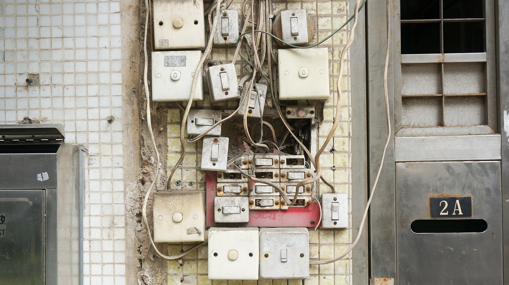
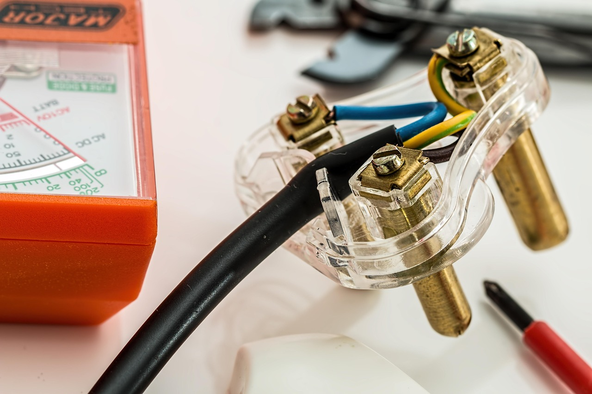
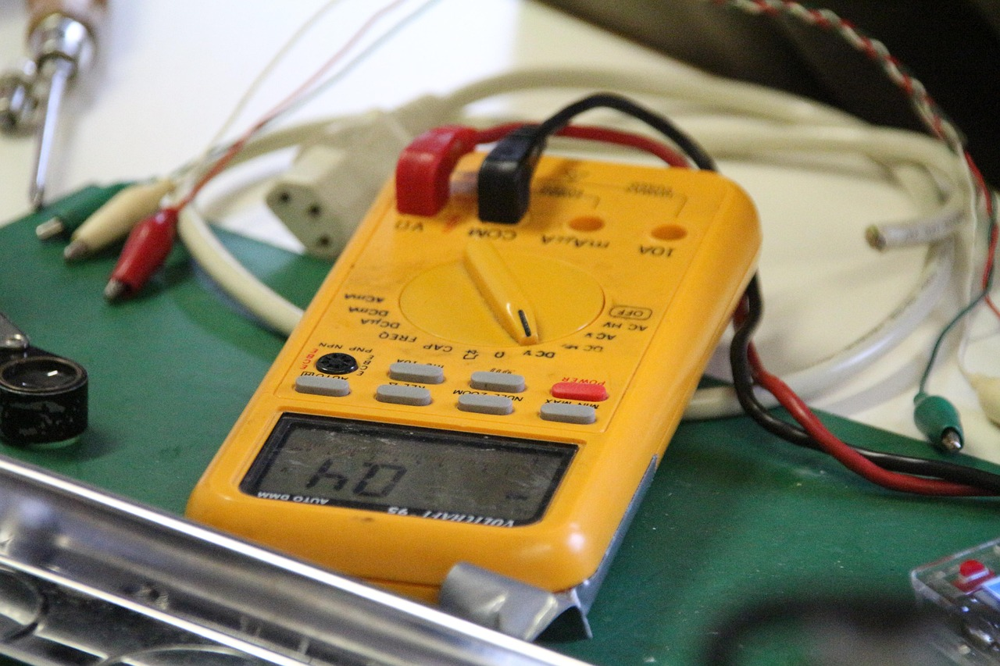

What Low-Voltage Systems Actually Is
“Low voltage” is a big umbrella. It often includes structured cabling (Cat6, fiber), security cameras (CCTV), access control, intrusion systems, intercoms, AV, and various building control integrations. In many jobs, you’re pulling and terminating cable, installing devices, labeling everything, and then testing to prove it works.
People imagine “run some ethernet.” Reality: it’s standards + signal integrity + documentation. Cable routing, bend radius, separation, termination quality, labeling, and testing all matter — because bad work creates ghost problems later.



What You Spend Time Doing
Low-voltage is often repetitive, but it’s not mindless: the repeatability is where quality shows up. The average day is cable pulls, device installs, terminations, labeling, and tests — plus troubleshooting when something fails acceptance.
- Pulling cable: planned routes, gentle handling, proper support, separation from interference sources.
- Terminating: RJ45s/keystones/patch panels, fiber terminations (role-dependent), clean punch-downs.
- Installing devices: cameras, readers, sensors, speakers, WAPs, alarm components, mounts.
- Labeling + documentation: cable IDs, port mapping, as-builts, and “future you” gratitude.
- Testing: continuity, certification (where applicable), signal checks, device commissioning.
- Troubleshooting: dead ports, flaky signals, mis-terminations, wrong pair order, POE issues, device config conflicts.
Low-voltage rewards “quiet excellence.” Nobody notices perfect labeling until the day something breaks — then you look like a wizard.
Where the Pressure Comes From
Pressure comes from handoff deadlines and acceptance testing. Many low-voltage installs have punch-list moments where every port, camera, door, or speaker has to work on demand. If your labeling is wrong or your terminations are sloppy, you’ll spend late hours chasing invisible mistakes.
There’s also coordination pressure: you’re often working in the same pathways as electrical, HVAC, fire protection, and other trades. Getting your cable paths right (and protected) is half the battle.
What Traits Actually Matter
Low-voltage is a great fit for people who like clean systems, neat work, and troubleshooting without the same high-voltage exposure. The “craft” is organization and precision.
- Organization obsession: you label, bundle, route cleanly, and keep things readable.
- Patience for repetition: terminations and cable management repeat — quality must stay consistent.
- Testing discipline: you verify and document instead of guessing.
- Detail tolerance: small mistakes create big failures — you catch them early.
- Comfort with tech: you can learn basic device setup, networks, and system logic.
- Troubleshooting mindset: you enjoy “why isn’t this talking?” puzzles.
Low-voltage is basically: “build a clean map of signals.” Your value is clarity.
Who Should Probably Avoid It
Low-voltage is not just “easier electrical.” It has its own pain points.
- You hate neatness: messy cable management becomes a career-long problem.
- You get bored by repetition: terminations and labeling are constant.
- You avoid computers: many systems require basic configuration and network awareness.
- You want heavy power work: if you want big feeders, switchgear, and high-energy systems, this may feel small.
- You don’t like troubleshooting: low-voltage failures can be subtle and time-consuming.
If you want bigger power installs, compare with commercial electrical. If you want machine/controls maintenance, compare with industrial electrical. If you mostly want fault-finding work, compare with troubleshooting & maintenance.
The Low-Voltage “Loop”: Route → Terminate → Label → Test → Document
Low-voltage lives and dies by process. The best techs build “future-proof” installs.
- Route cleanly: protect cable, avoid interference sources, respect bend radius and support rules.
- Terminate correctly: consistent standards, clean punch-downs, correct pair order, solid strain relief.
- Label everything: ports, cables, devices — so troubleshooting isn’t a scavenger hunt.
- Test the truth: certify or verify signal/device behavior before handoff.
- Document the system: mapping turns chaos into maintenance-friendly clarity.
Low-voltage is “make it understandable.” If your work is understandable, it’s maintainable — and you become valuable.
Next Step: Get a Signal, Then Compare
If low-voltage sounds appealing, decide based on whether you like neat systems, repeatable detail work, and tech-adjacent troubleshooting. This lane rewards organization and verification more than speed.
Run the Low-Voltage Systems Fit Diagnostic first. Then compare paths from the Electrical Hub or step back to the Trades Hub. If you want the full map, start at the homepage.